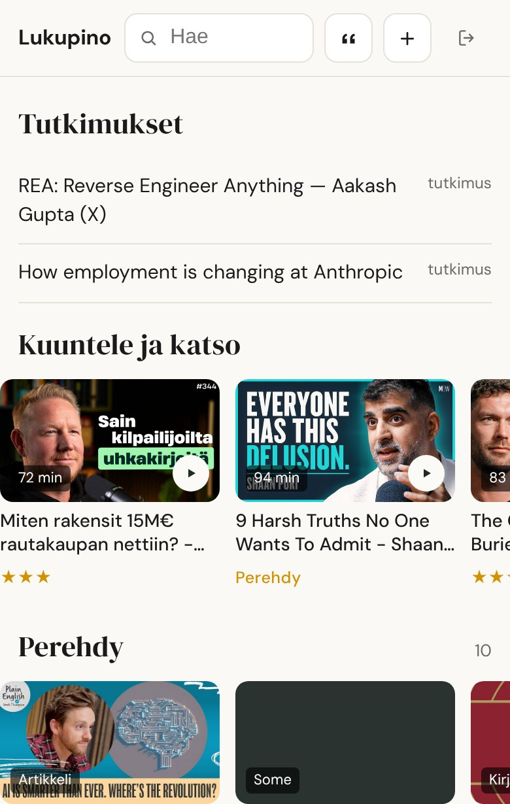
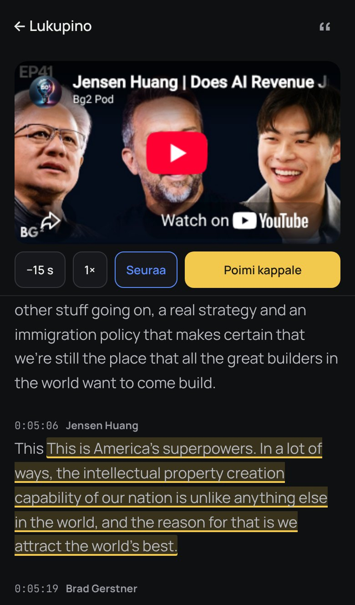
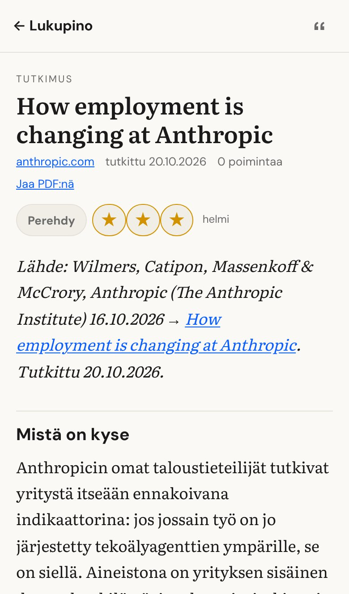

Kaikki mitä luen, kuuntelen ja katson yhdessä paikassa — ja tekoäly, joka tiivistää, litteroi ja auttaa oppimaan siitä lisää.
Itse rakennettu kirjasto artikkeleille, podcasteille, videoille, kirjoille, PDF:ille ja kuville. Tallennus käy yhdellä napautuksella puhelimen jakovalikosta.
Hyvät jutut hukkuivat selaimen välilehtiin ja muistiinpanoihin. Nyt ne löytyvät, ja niistä jää jotain käteen.


